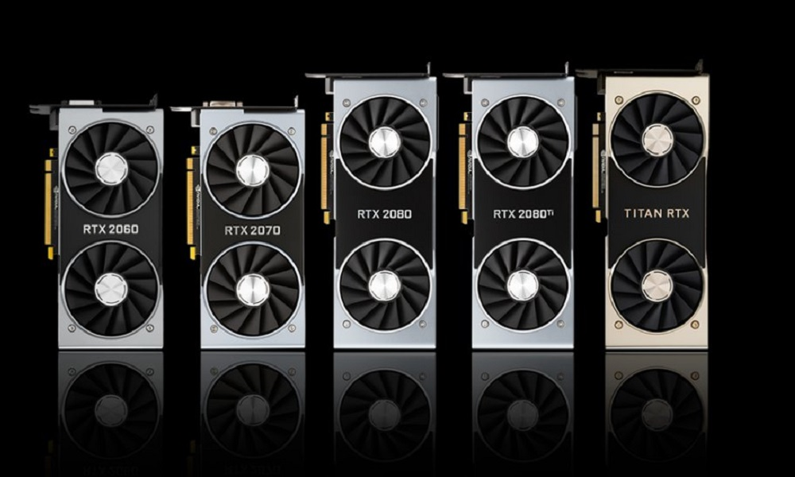

El ray tracing o trazado de rayos de Nvidia desarrolla esta animacion 3D de iluminacion, lo cual permite reflectar
luces, sombras y reflejos realista, esta funcion cobra vida ya que gracias a los trazados desde un punto de vista en la camara
y el ojo de los rayos, estos van hacia un objetivo en concreto el cual permite calcular las sombras y reflejos que genera esta tecnologia
asi dando fuente de luz a las escena que vemos en pantalla.
Nvidia DLSS
Deep Learning Super Sampling o mejor llamdo DLSS. Es una tecnologia creada y propietaria de Nvidia que permite dar un alto
rendimiento en videojuegos con el ray tracing.
El activar solo el RT debemos de tener en cuenta que esta funcion en algunos
casos ocasiona un rendimiento bajo en los juego significativamente en resoluciuones altas, en el caso que activemos el DLSS
tendremos un aumento de FPS con o sin RT activado.
Geforce 20 Series

La serie 20 de Nvidia son las tarjetas graficas sucesoras de las graficas Geforce 10 Series. Esta serie nueva de Nvidia salieron al mercado
el 20 de Septiembre de 2018 y un tiempo mas tarde saldria a la venta una serie mas potente de graficas de Nvidia llamadas
Geforce RTX Super en el año de 2019 especificamente el 2 de julio. Estas nuevas graficas cuentan con una arquitectura de
de 14 nm y con la introduccion del famoso Ray tracing, Cores, Tensor, dedicated Integer y DLSS.
Tarjetas Graficas Series 20
Tarjeta Grafica
Año de Lanzamiento
Geforce RTX 2060
15 de enero de 2019
Geforce RTX 2060 Super
9 de julio de 2019
Geforce RTX 2070
17 de octubre de 2018
Geforce RTX 2070 Super
9 julio de 2019
Geforce RTX 2080
20 de septiembre de 2018
Geforce RTX 2080 Super
23 de julio de 2019
Geforce RTX 2080 Ti
27 de septiembre de 2018
Nvidia Titan RTX
18 de diciembre de 2018
Geforce 30 Series
Las linea Geforce 30 Series de Nvidia llegaron a sucedir a la series 20 de la generacion pasada. Estas tarjetas graficas
fueron anunciadas el 1 septiembre de 2020 y su venta al publico comenzo el 17 de septiembre de ese mismo año.
Estas tarjetas graficas cuentan
con tecnologia Ray tracing, a su vez estan basadas en una arquitectura Ampere y una segunda generacion de RT cores y una tercera generacion
de Tensor Cores.
al momento de su lanzamiento estas tarjetas graficas fueron agotadas rapidamente por los usuario que lograron hacerse una nueva grafica de esta linea.
Los problemas princiaples de esta grafica se dio a la escasez de componentes, la pandemia por el Covid-19 y en algunos casos los minero de bitcoins que las utilizan para minar crypto monedas,
esto como resultado, hizo que las series 30 dupliquen su precio hoy en dia.